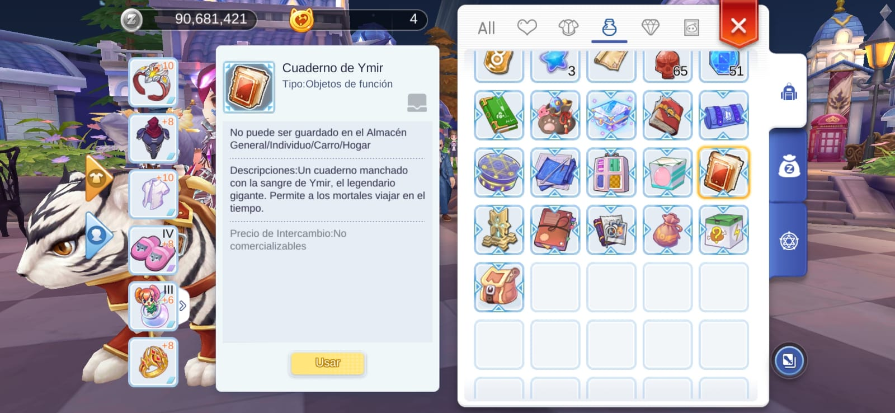

1) Realice el evento que está en proceso
Ragnarok M 2 casi siempre tiene un evento en proceso, a pesar que Ragnarok M 2 tiene eventos de varias semanas, se progresa diariamente, lo primero que debe hacer al entrar al juego, es intentar completar el evento del dia para no quedar atrás con sus recompensas, que suelen ser bastante buenas para su Personaje, ya sea un Equipo valioso u Objetos para completar su Libro de Aventura
Priorice completar el Evento del dia al entrar al juego, Luego realice las diarias que se explicarán a continuación
2) Rutina Diaria
La rutina diaria son las misiones que puede hacer todos los dias y las que dan excelentes recompensas y de manera muy accesible. A continuación un pequeño Top 5 de las mejores diarias que debe realizar al momento de conectar al juego, después de avanzar en el evento, desde el menu de Asistente. Aquí le dejo una Guia para obtener su Asistente:
Top 5: Aventura
Consuma 15 minutos de combate en el juego para obtener las recompensas. Si no tiene tiempo para jugar puede consumir rápidamente los 15 Minutos de Combate mandando algunas Mascotas a la Aventura de Mascotas Consulte nuestra Guia:
Top 4: Trabajo de Mascota
Reclame las recompensas otorgadas por sus Mascotas en el tablero de Trabajo de Mascota. Aquí podrás poner a tu mascota a recolectar botines que son necesarios para usted ( 0u0)/. Es menester priorizar la Captura de Mascotas y ponerla a realizar lo antes posible el Trabajo de mascotas con por lo menos 5 de Intimidad, esto es muy importante, por favor consulte nuestra guia:
Top 3: Tablero de Misiones

Completar la mision del Tablero 3 veces. Puede hacerlas de forma instantánea con Albóndigas de Aventura. Apunte a las misiones que otorgan: Bolsa de Zeny y Hierro Meteórico (0u0)/
Top 2: Reparar Grieta

Completar Reparación de Grieta 5 veces. Puede hacerlas de forma instantánea con Albóndigas de Aventura. Los premios por completar son: materiales, zeny, experiencia y probabilidad de Equipo valioso valorado en millones de zeny
Top 1: Donaciones al Gremio (Guild)
Entre al HALL de su Gremio y done articulos para el gremio en el que está para obtener Contribución y Medalla de Oro, Busque al NPC "Gerente de la Guild" que se encuentra justo en el medio del mapa del Gremio
Contribuir de ésta manera todos los dias volverá a su personaje progresivamente poderoso, ya que necesita constribuciones para desbloquear Habilidades ocultas de su Personaje y potenciar execibamente otras. Le puede resultar caro al principio, pero es una inversión muy importante para el poder de su Personaje, ya que si se vuelve mas fuerte, podrá cultivar zeny en mejores lugares, despejar Grietas, Mazmorras e Instancias sin mucha ayuda, etc. Definitivamente Donaciones al Gremio merece estár en primer lugar en éste TOP.
3) Misiones
En Ragnarok M 2, la mayor parte del tiempo estarás realizando una de estas 3 tareas: Realizar las misiones, subir de nivel o cultivar zeny
Hay tres tipos de misiones en el juego según el color de los signos de exclamación del NPC:
Rojo: Misiones de la historia principal. Priorice estos al principio del juego, ya que brindan excelentes recompensas de exp / zeny y desbloquean nuevas funciones en el juego
Azul: Misiones diarias repetibles. Priorice estos a continuación una vez que los desbloquee, ya que otorgan la experiencia más alta y las recompensas de artículos
Verde: Misiones secundarias. Aunque no otorgan recompensas más altas, también son esenciales ya que desbloquean ciertas características y habilidades. Haz esto cuando hayas terminado las misiones azules y rojas.
Si se llega a perder en el transcurso de la Mision Principal, puede consultarlo en el Panel de Misiones
Ahí están todas las Misiones Principales (Historia) del juego
4) Instancias Semanales

Las Instancias Semanales son muy importantes, importantisimas, es el máximo progreso en el juego, pero hacerlas es muy dificil, si eres iniciado no podrás hacerlas solo, necesitarás una party (Grupo) con otras personas que te ayuden a completarlas
En la pestaña de "Grupo"
puedes buscar un equipo de personas y solicitar que te ingresen al grupo, si tienes la suerte de ser aceptado podrás realizar la instancia con ayuda de ellos. Cabe recarcar que las Instancias Semanales tienen sus niveles de dificultad, a veces los equipos buscan soporte, otras ocaciones dps (Damage per Second: Daño por segundo), solo si les sobra cupo podrás ingresar sin mayores problemas, busque en el transcurso de la semana para hacer las distintas Instancias Semanales
Las Instancias Semanales solo se hacen 1 vez a la semana, luego de eso no obtendrás las recompensas.
Para mas detalles consulte nuestra Guia:
5) Captura mascotas!

Las mascotas son muy esenciales en el juego para subir de nivel rápidamente, ganar muchos artículos zeny o de drop. Deberías conseguir varias mascotas lo antes posible, ya que son una de las mejores inversiones del juego.
¿Por qué debo priorizar la captura de mascotas?
- 1° te ayuda a luchar contra los monstruos en la batalla.
- 2° podrás enviarlos a Aventura de Mascotas, ahí las mascotas te darán botines gratis + posibilidad de objetos / cartas raras.
- 3° podrás enviar algunas Mascotas a Trabajo de Mascotas: ahí las mascotas te darán articulos gratis cada 60 minutos, como pociones de experiencia para subir de nivel, Albondigas de Aventura que necesitaras muchas en el futuro, etc
- 4° También te darán caracteristicas extras, para potenciar aún más a tu personaje como str, agi, vit, flee, hit, hp%, sp, etc.
Hazte con las mascotas!, sé un entrenador pokemon y capturalos a todos!
Consulte nuestra guia de mascotas:
6) Hazte con el cuaderno Ymir!
El Cuaderno Ymir será uno de tus objetos preferidos en el juego, te lo aseguro. Con él podrás resetear tu caracteristicas de manera gratuita y todas las veces que quieras, así podrás probar distintas versiones de tu Personaje cambiando sus atributos. Consigelo lo antes posible!
¿Cómo consigo el Cuaderno Ymir?
Consulte nuestra guia:
7) Agricultura Zeny y Articulos

despues de realizar todo lo descrito anteriormente alterne entre hacer misiones y gastar el tiempo de combate en cultivar zeny
A lo largo del juego se dará cuenta que necesitará montones de zeny, y cuando me refiero a montones, me refiero a millones! D:
La mayor parte del zeny lo utilizará para comprar Equipo (Preferiblemente con un buen Encanto), actualizar equipo, mejorar Equipo, refinar Equipo, donaciones de Gremio, Encantar Equipo, entre otros. Comsulte nuestra Guia:
Prefiera el Cultivo de Zeny por encima del subir nivel, el dinero como en todo en esta vida actualmente, te facilitará y mejorará tu existir, así que no tema en relantizar su nivel por ir a cultivar zenny, Equipo con buen Encanto supera Personajes con alto Nivel, te lo digo yo, que siendo 130 derroto y realizo mejores instancias que muchos 160 que no tienen zeny c:<
Hay dos formas de hacer dinero
Agricultura Activa para jugadores activos y la Agricultura Pasiva para jugadores peresosos ó con poco tiempo libre
- Ir a una Zona de Monstruos y Matarlos
- Misiones Diarias
- Instancias semanales
- Trabajo de Mascota y Aventura de Mascota (ya dije que las Mascotas eran una buena inversion?)
- Con las Albondigas de Aventura realizar la Rutina Diaria de forma instantánea
- Comprar con Big Cat Coin (de pago)
Agricultura Activa
Agricultura Pasiva
Consulte nuestra Guia:
8) Subir de Nivel
Evidentemente, querras subir de nivel para desbloquear nuevos mapas, caracteristicas y basicamente seguir completando el juego, Sigamos ahora con la Guia de Nivel
En Ragnarok M 2 Eternal Love todo lo que haga le hará subir progresivamente de nivel, si bien hay mejores formas que otras como:
- Laboratorio de Monstruos que es una de las mejores formas de hacerlo (Consume 60 Tiempo de Combate).
- Usar consumibles como Panacea de Crecimiento de Poring que doblará la velocidad a la que sube de nivel al matar monstruos
- También siempre es aconsejable usar siempre al momento de matar monstruos: Hierro Meteórico ó Cadena de relámpago.
Para más detalles consulte nuestra Guia:
9) Atributos de Caracteristicas
Tu personaje tiene 6 Atributos de Caracteristicas
- STR: Aumenta el daño fisico cuerpo a cuerpo (algunas habilidades a distancia son consideradas cuerpo a cuerpo, verifique bien sus habilidades)
- AGI: Aumenta la Velocidad de Ataque, Movimiento y Flee(Huida: probabilidad de esquivar un ataque fisico sin critico)
- VIT: Aumenta el HP máximo (Vida), defensa fisica y la regeneracion de HP
- INT: Aumenta el daño magico, la defensa magica, el máximo SP(Energia para lanzar Habilidades) y la regeneracion de SP
- DEX: Aumenta el daño fisico a distancia, reduce el tiempo de lanzamiento y aumenta el HIT (Probabilidad de ensestar un ataque sin critico)
- LUK: Aumenta la probabilidad de encestar un ataque critico, la Resistencia a Golpe Critico (probabilidad de esquivar un ataque critico) y en menor medida aumenta el daño fisico
No se preocupe si distribuyó mal sus puntos de Caracteristicas, Obtendrá con Misiones, formas de restablecer sus Caracteristicas. Consulte nuestra Guia:
Con esto llegamos al final de la Guia para Principiantes, abarcamos lo más importante para que usted comience a jugar Ragnarok M 2 Eternal Love con pie derecho.
A continuación le dejaremos otras guias que debe seguir después de dominar las ya mencionadas
No olvides que la razón principal de jugar, es \(=0u0=)/ divertirce!, hagamos una bonita comunidad juntos
Si tienes alguna duda, consulta o sugerencia, Contáctame
+56 9 89096503